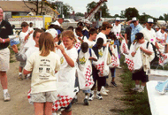
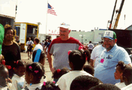
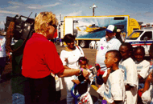

|
On Thursday and Friday of race week, the Unlimiteds Detroit Fan Club offers tours of the Dodge Memorial Pits. This gives you an opportunity to watch the pit activity while having a guide explain a little about the boats and crews. Look for the white "Unlimiteds Detroit" merchandise trailer in Waterworks Park to sign up for a tour. My favorite yearly souvenir from the races is the Unlimiteds Detroit calendar... they'll be happy to show you one! And no, it doesn't start with January. <grin> SODT and UD combine efforts to present "New Kids On The Course", pit tours for local school children. Sponsors and volunteers help us fill their "perk bags", drivers talk to the kids (that's Mark Tate in the red & gray shirt), and a lucky few get a TV interview...
   (Photos copyright 2000 Denise Taylor)
All contents Copyright © 2001 Spirit of Detroit THUNDERFEST, except where noted.
Web page created by Brian Reed.
|